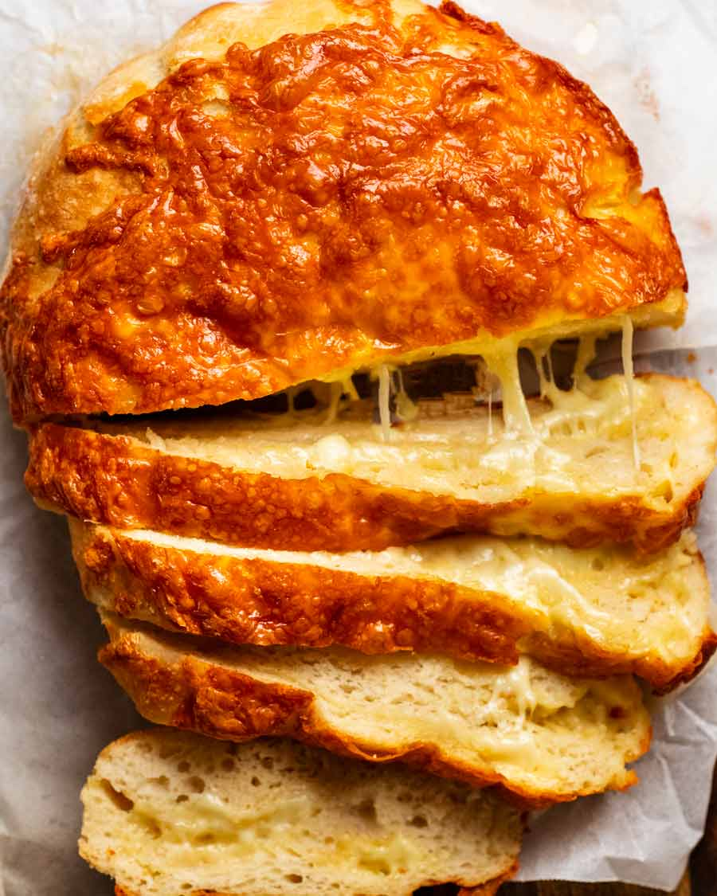

Cheesey Bread (no knead!)

Author: Nagi
Prep: 5 minutes
Cook: 45 minutes
Dough Rising: 5 minutes
Ingredients Needed
- 3 cups bread flour
- 2 tsp instant yeast
- 11/2 tsp cooking/kosher salt
- 11/2 cups very warm tap water
- 21/2 cups (tightly packed) Colby cheese
Shorthand recipe – for experts
-
Mix dry ingredients, mix in water. Rise 2 – 3 hrs until
doubled.
-
Preheat pot 240°C/450°F (220°C fan). Turn dough out.
Reserve 1/3 cheese for topping. Fold inwards 4 times,
stuffed/layered with remaining cheese. Flip onto parchment
paper. Pile reserved cheese on top.
-
Bake 35 minutes covered, 10 minutes uncovered.
Rest 10 minutes. Eat!
Full recipe
Magic no-knead dough
-
Shaggy dough – Using a rubber spatula, mix flour,
salt and yeast in a large bowl. Add water, then mix using
the handle of the spatula until you can no longer see flour
. The dough should be too sticky to knead by hand, but not
pourable like cake batter.
-
Rise – Cover with cling wrap and leave to rise in a
warm place for 2 to 3 hours until the dough doubles in
volume (Note 5). The surface should be bubbly,
and the mixture should jiggle when you shake the bowl.
-
Preheat pot – Half an hour before the dough is ready
, put a 24-28cm / 4.5-8 quart heavy based pot with a lid in
the oven to preheat to 240°C/450°F (220°C fan-forced). Note
7 for no dutch oven method.
Magic no-knead dough
-
Pat into disc – Sprinkle work surface with 1 tbsp
flour. Scrape dough out, sprinkle surface with flour, pat
into a ~20cm/8" disc.
-
Cheese it – Set aside 1/3 of the cheese for topping.
Cover surface with half the remaining cheese.
-
Fold inwards stuffed with cheese – Using a dough
scraper or anything of similar shape (cake server, large
knife, spatula), fold the sides inwards 4 times to roughly
form a roundish shape, topping each layer of with the
remaining cheese (but keep the final layer cheese free,
it will be the base of the bread).
(Note 6 for tips)
-
Paper transfer – Flip the dough onto a sheet of
parchment/baking paper so the seamside is (mostly) facedown
. Tidy the shape if desired. (Note 6)
-
Cheese crown – Pile the reserved cheese on.
Bake
-
Hot pot transfer – Remove hot pot from the oven.
Use paper to transfer dough into the pot, keeping it on the
paper. Put lid on.
-
Bake 35 minutes. Remove lid. Bake 10 minutes to
colour the surface.
-
Cool – Remove pot from oven. Use paper to transfer
bread onto a cooling rack. Remove paper. Cool at least
10 minutes before slicing! (Note 8)
Easy Fried Rice

Author: Larwance Wang
Prep: 10 minutes
Cook: 5-10 minutes
Serves: 4
Ingredients Needed
- 4 cups of cooked day old rice
- 2 large eggs
- 1 cup of frozen carrots and peas
- 2 medium Green Onions/Scallions
- soy sauce (replacement is liquid aminos)
- 3 cloves of garlic
- 2 tablespoons plus 1 teaspoon vegetable oil, divided
- 3/4 toasted seasme oil
-
3/4 teaspoon ground white pepper, plus more
as needed.
- 2 tablespoons plus 1 teaspoon vegetable oil, divided
-
11/2 teaspoons kosher salt, plus more as needed
How to make Fried Rice
-
Cook the veggies – Stir-fry garlic, scallion whites,
peas, and carrots in a large wok or nonstick frying pan.
-
Add the rice – Make sure to break up any clumps,
toss to combine, and add your seasonings.
-
Scramble the eggs. – Push the fried rice to one side
of the pan, then add your eggs to the other side. The eggs
are scrambled in the pan while they’re getting slowly cooked
, and then folded into the fried rice to finish. (This
technique is used in a lot of stir-fries and dry noodle
dishes, and it’s really fun to do too!)
-
Paper transfer – Flip the dough onto a sheet of
parchment/baking paper so the seamside is (mostly) facedown
. Tidy the shape if desired. (Note 6)
-
Finish the Fried rice – Drizzle with sesame oil and
garnish with scallion greens.